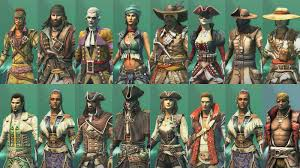

Cosmetic Options
Clothing
Sea Of Thieves offers many different customization options for the player's custom character. It is always necessary to give your character some nice outfits as you charge into battle!
Ship Customization
Ship customization is a key aspect of striking fear into your opponents. You have the ability to change the entire ship including the sails which conveys your playstyle and sends a strong message to other players who may be lurking. Another unique aspect in ship customization is the players ability to fly the flag of whatever faction they chose resulting in extra in-game currency for every item the player sells.